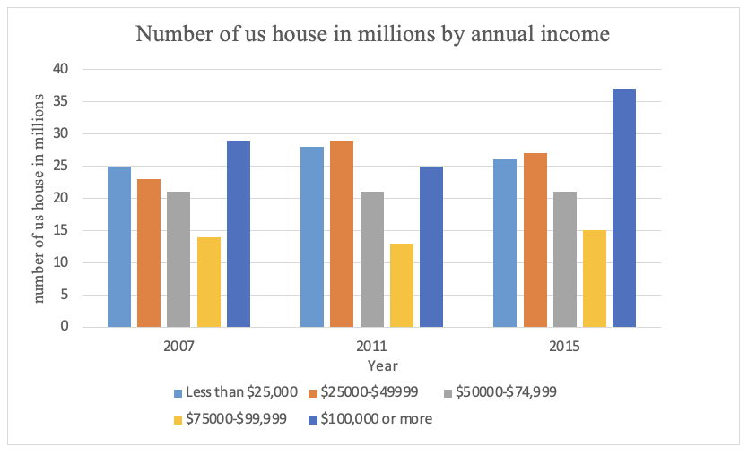

Task 1
You should spend about 20 minutes on this task.
The chart below shows the number of households in the US by their annual income in 2007, 2011, and 2015.
Summarise the information by selecting and reporting the main features making comparisons where relevant.
Write at least 150 words.
Task 2
Write about the following topic:
You should spend about 40 minutes on this task.
The working week should be shorter and workers should have a long weekend do you agree or disagree
Give reasons for your answer and include any relevant examples from your own knowledge or experience.
Write at least 250 words.